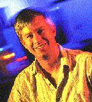

Invited Speakers
|  |
Professor Daniel Weld Tentative title: "Machine Reading: from Wikipedia to the Web" Daniel S. Weld is Thomas J. Cable / WRF Professor of Computer Science and Engineering at the University of Washington. After formative education at Phillips Academy, he received bachelor's degrees in both Computer Science and Biochemistry at Yale University in 1982. He landed a Ph.D. from the MIT Artificial Intelligence Lab in 1988, received a Presidential Young Investigator's award in 1989, an Office of Naval Research Young Investigator's award in 1990, was named AAAI Fellow in 1999 and deemed ACM Fellow in 2005. Dan is an area editor for the Journal of the ACM, on the editorial board of Artificial Intelligence, was a founding editor and member of the advisory board for the Journal of AI Research, was guest editor for Computational Intelligence and Artificial Intelligence, edited the AAAI report on the Role of Intelligent Systems in the National Information Infrastructure, and was Program Chair for AAAI-96. Dan has published two books and scads of technical papers. Dan is an active entrepreneur with several patents and technology licenses. In May 1996, he co-founded Netbot Incorporated, creator of Jango Shopping Search and later acquired by Excite. In October 1998, Dan co-founded AdRelevance, a revolutionary monitoring service for internet advertising which was acquired by Media Metrix and subsequently by Nielsen NetRatings. In June 1999, Dan co-founded data integration company Nimble Technology which was acquired by the Actuate Corporation. In January 2001, Dan joined the Madrona Venture Group as a Venture Partner and member of the Technical Advisory Board. Read more... |